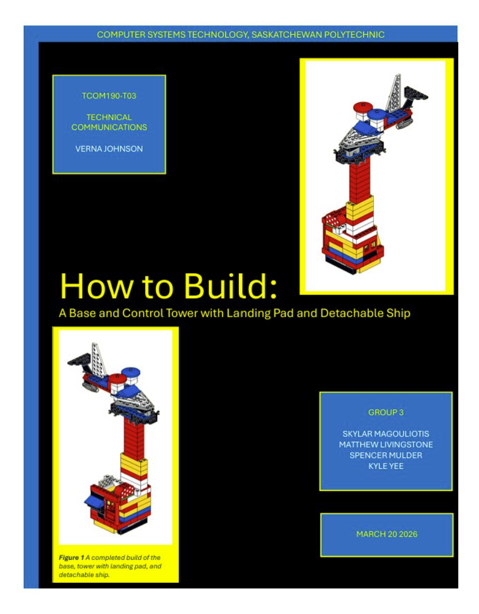

Lego Instructions Project
The Lego Instructions Project is a document that provides step-by-step hardware-style instructions on how to build our custom Lego model.

- SSituation The assignment was to create detailed instructions on how to build a Lego structure
- TTask Document writing, revision, and teamwork
- AActions I had to take into account that the user may be unfamiliar with the subject, so I ensured the instructions were thorough and clearly explained piece names and placement.
- RResults We achieved a high grade on this assignment and exceeded the project requirements.
Reflection
It helped me improve my ability to reread and follow instructions. In situations where I may need to guide a new hire at work, this experience could prove useful. Additionally, it helped me understand how to guide someone who may be unfamiliar with a subject.